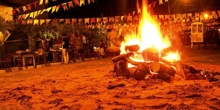

As festas juninas, com suas quadrilhas e comidas típicas, são só um exemplo de como o campo e a cidade se encontram nas tradições brasileiras. 💃🌽
As músicas, as danças, os sabores... tudo isso é um pedacinho da vida no campo que chega até a cidade e vira parte da nossa cultura. 🥁🍛
Celebrar essas tradições é manter viva a história dos nossos antepassados e valorizar as raízes que nos conectam. Bora dançar uma quadrilha? 😄
 ⬅️ Voltar